4 From Your Local Computer
When moving to cloud computing, you may have data that you’ve stored on a local computer (such as a work laptop) that you need to transfer into the cloud. AnVIL has developed a simple drag-and-drop tool called the Data Uploader to make this process quick and painless.
In this example, we’ll upload some genomic data that is stored on your local computer. You can use a file of your own, or download the files we are using in this example from our GitHub repo.
The data files for this vignette are very small FASTA files. Each file contains only a single gene from a single COVID-19 variant (initially downloaded onto a local server from GenBank). While we kept these files small for the vignette, the AnVIL Data Uploader can easily handle much larger files.
Genetics
Novice: no genetics skills needed
Programming skills
Novice: no programming skills needed
What will this cost?
In general, it is free to upload data to the cloud, but the workflows used to process data may incur costs. Additionally, storing data in the buckets after uploading can incur costs, too. For this vignette, we were able to upload the data for essentially nothing, while maintaining the workspace with the data costs $0.358 a day, according to our records in late February, 2026.
Check out the Google Cloud Console for accurate reporting of your own costs.
You can also read more about cloud costs on the AnVIL Portal.
4.1 Step One: Create your workspace
The starting point for bringing your own data to AnVIL is the workspace. Before you can do anything, you will need to create a workspace. Once you have logged into your AnVIL account, click on “workspaces” in the left-side menu. You can open this menu by clicking the three line icon in the upper left hand corner.

Once you have opened the workspace page, create a new workspace by clicking on the plus sign at the top.
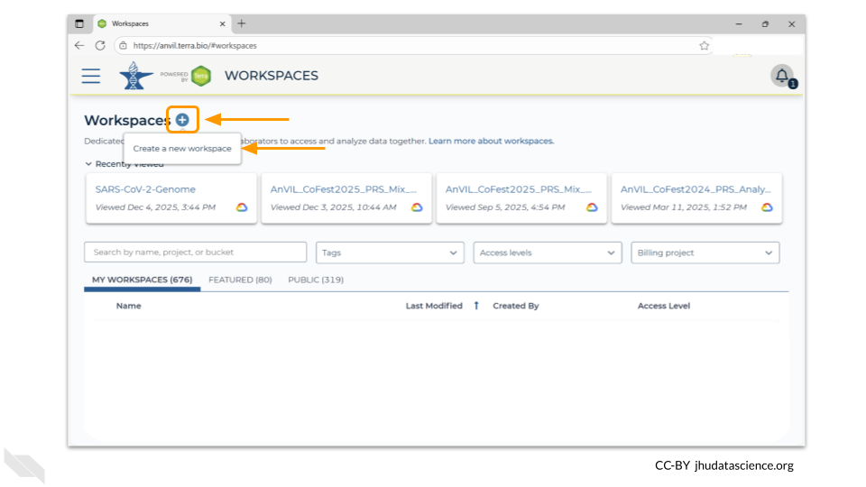
You should now see a pop-up window that lets you customize your new workspace. You will need to give your new workspace a unique name and assign it to a billing project. The “anvil-outreach” billing project is used here as an example, but you will not be able to assign it. You’ll have to use one of your own billing projects. After filling out these two fields, click the “Quick Create workspace” button to create a workspace without enabling sharing or additional security options.
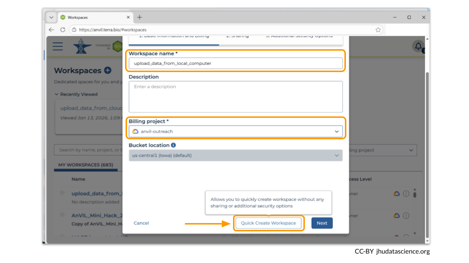
You can read about Authorization Domains for workspace security in this article in the Terra documentation.
Once you have created a workspace, AnVIL will take you to the workspace dashboard.
4.2 Step Two: Open the Data Uploader
When you switch to the Data tab in your workspace, you’ll see three headers on the left hand side: TABLES, REFERENCE DATA, and WORKSPACE DATA. Each of these sections allow you to organize all the possible data and information you might need for an AnVIL analysis. The TABLES section is data like samples, participants, specimens, or any other data that you might want to bring into your workspace. The REFERENCE DATA section is for reference genomes that are stored in a publicly-accessible Google bucket. Finally, the WORKSPACE DATA section is meant for files or Docker images that may be used in across multiple analyses in the workspace.
We will use the Data Uploader tool to populate the TABLES section of the workspace with our data samples. Click on the box in the upper left hand corner that says “Import Data”. From the dropdown menu, you’ll want to choose “Open data uploader”.
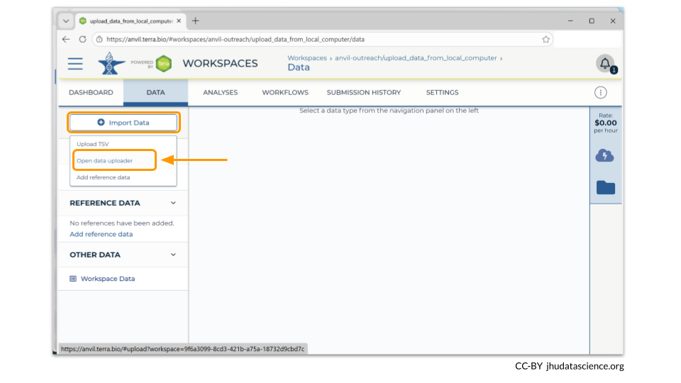
When you first open the Data Uploader, you will be prompted to choose a workspace. Click on the workspace that you have just created.
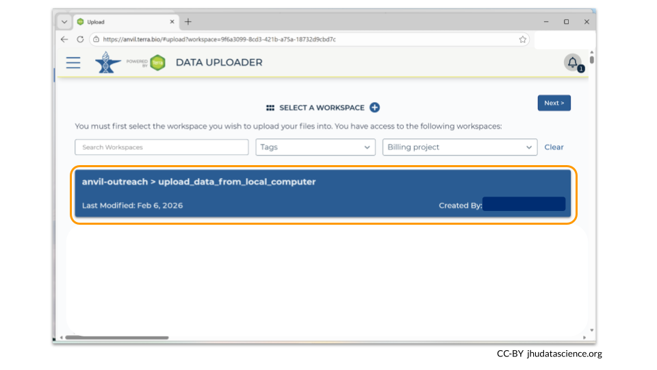
4.3 Step Three: Upload data and metadata
After you have chosen your workspace, the Data Uploader then will prompt you to create a data collection. This is essentially a directory that contains all the samples described by a single metadata file. Click on “Create a New Collection”.
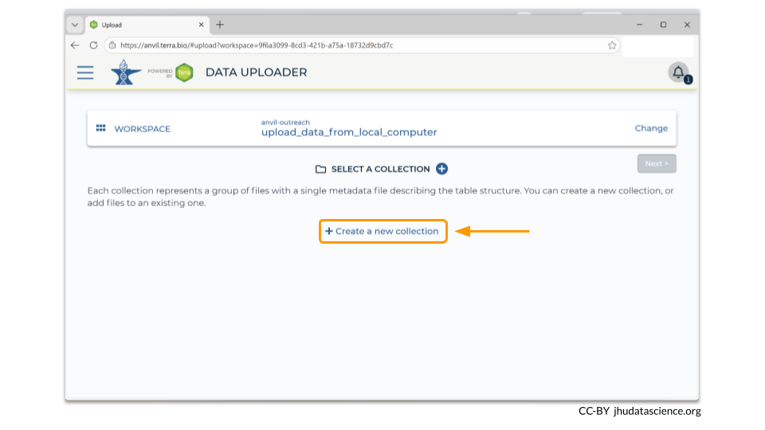
You will need to choose a name for your data collection. In our example, we chose to name the collection “covid_sequences”. Make sure to pick something descriptive enough so that you’ll know what the samples are later! Here we have chosen to use covid_sequences, since we are uploading FASTA files of covid spike protein sequences.
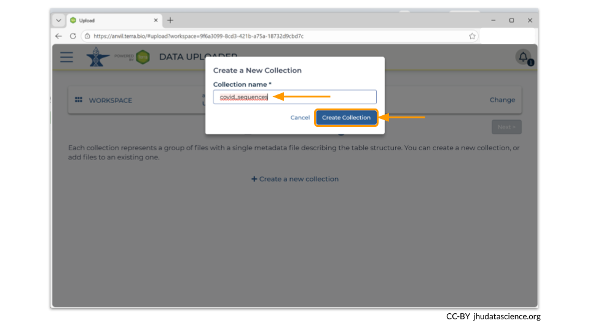
Next, click on the “Upload” button. The Data Uploader will prompt you to choose the files from your computer that you want to upload into your workspace bucket. Remember that every file must have a unique name!
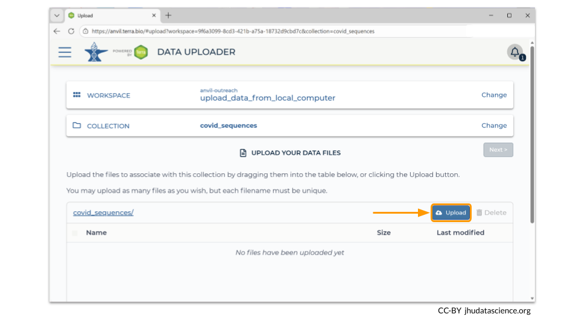
You can always remove files after uploading. In this example, we accidentally uploaded a FASTA file called “sars_membrane_protein_omicron.fasta”. To remove it, check the box next to the file name and click the “Delete” button.
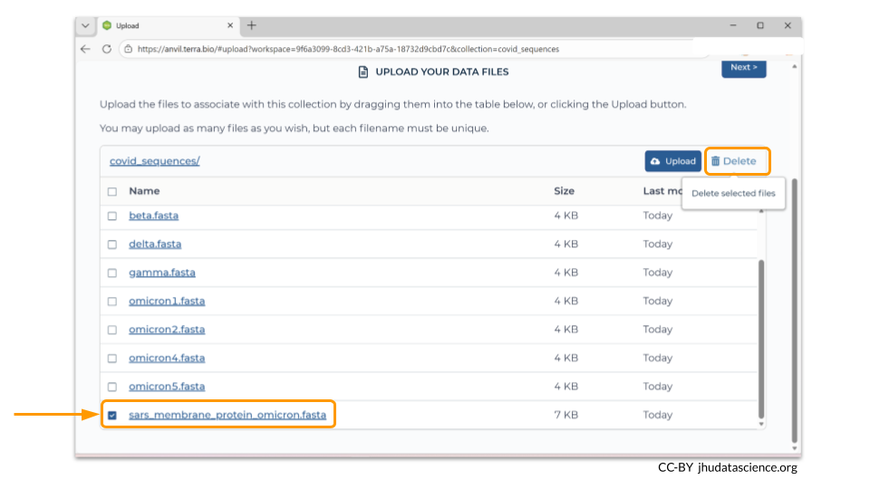
Once you have verified all the files that you want in your workspace bucket have been uploaded, click the “Next” button so that you can load the sample metadata.
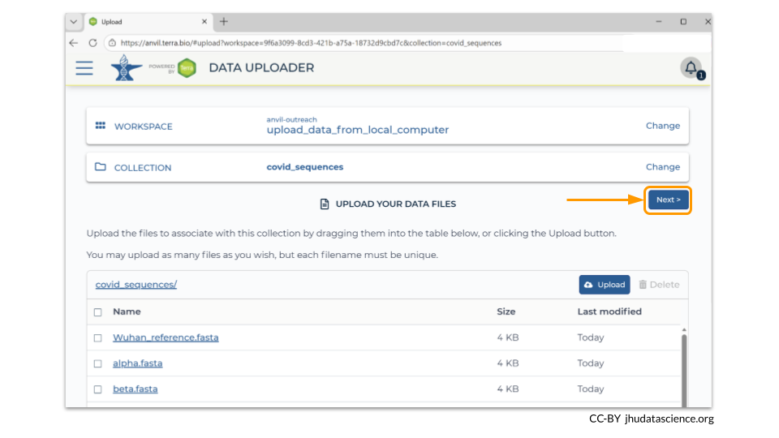
Data Uploader requires you to drag and drop your metadata file onto a bar at the bottom of the page. (You can always drag and drop a folder containing your files, instead of adding each file one-by-one.)
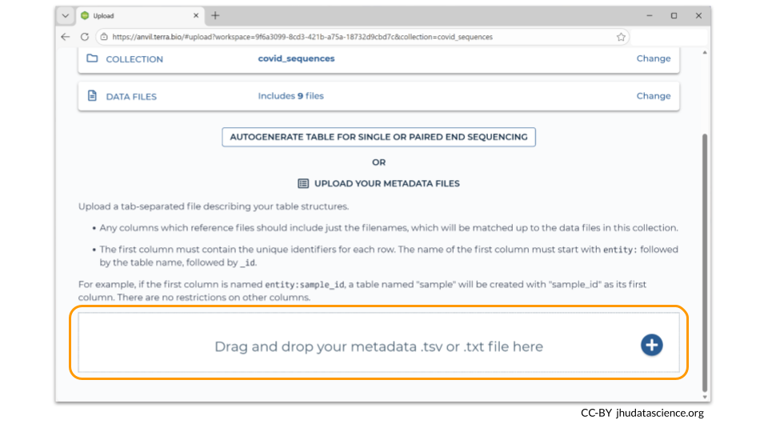
Your metadata file should be saved as a tsv. The first line needs to contain the column names for the metadata. Additionally, the first column should be called “entity:sample_id”. Each row in the metadata must have a unique sample_id value. Remember to use tabs between each column.
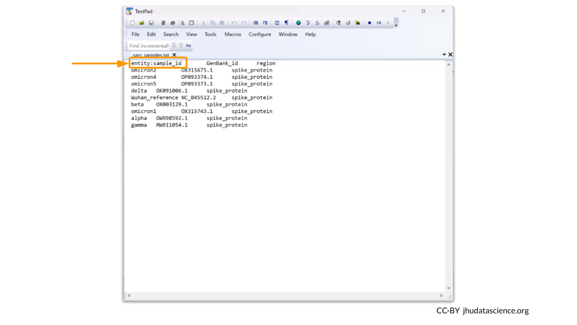
The Data Uploader will display a table that displays your metadata. If it looks good, you can click “Create Table” to finish the file upload.
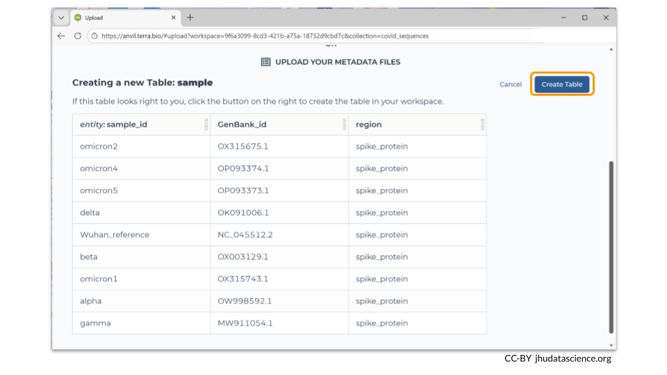
You can add multiple data collections to your workspace. If you go back to “Select A Collection”, clicking on “Create New Collection” allows you to make an additional data collection. You will need to choose a unique name for your new collection. Our new data collection is called “covid_membrane”.
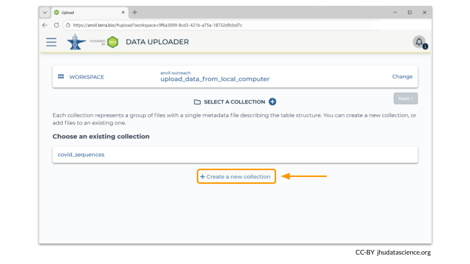
After you have created a new data collection, you can add your new files (and metadata). In this example, we loaded four additional FASTA files that contain sequences of a COVID-19 membrane protein gene.
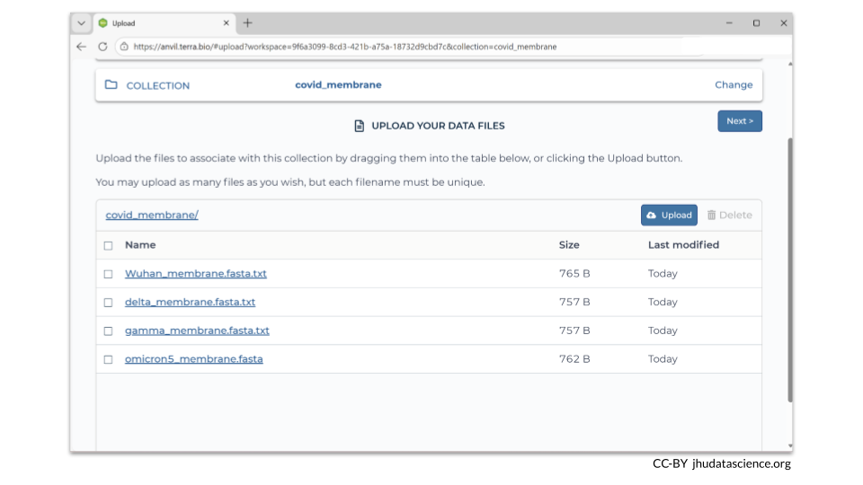
4.4 Step Four: Verify files were moved into your workspace
How do you know if your files were successfully transferred?
There are two ways to check! First, you should see information about the samples you loaded in the TABLES section of the Data tab.
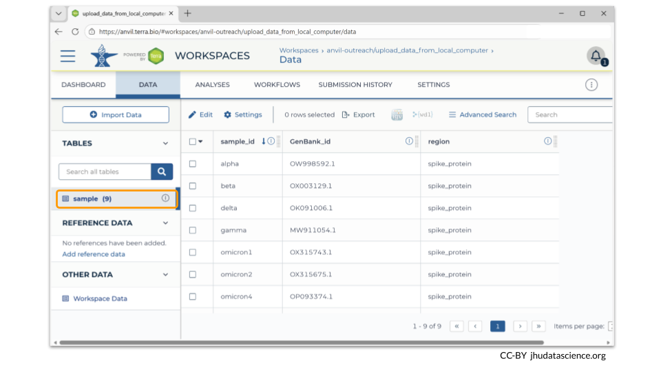
You can also see any uploaded files by clicking the “Files” directory at the bottom left in the Data Tab. Notice that our two data collections are two separate directories within our Files directory!
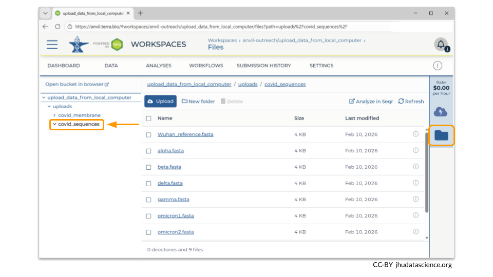
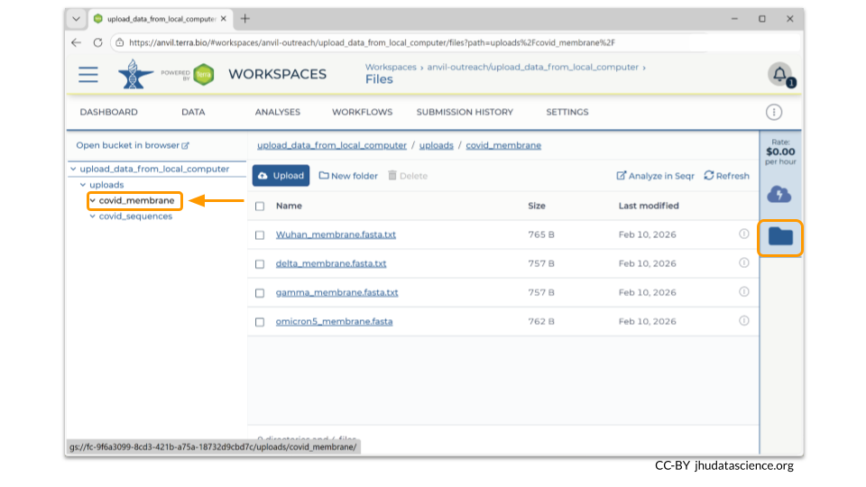
If you click on the name of the file, you can also see the details of the file.
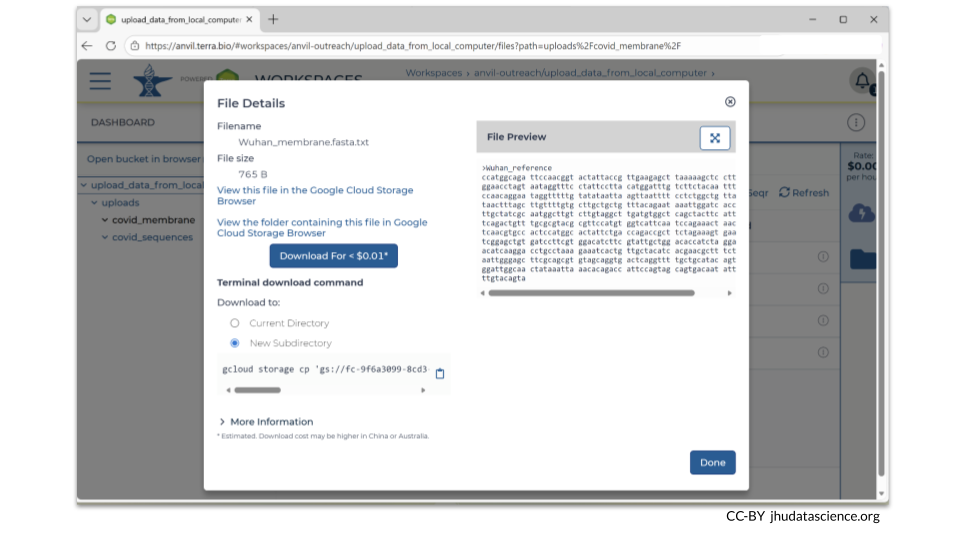
This is a good time to check that the sizes of the files you transferred match the sizes of the original files.
4.5 Summary
- Create a workspace
- Open Data Uploader
- Upload data and metadata (this requires creating a data collection)
- Verify that files have been transferred
4.6 Additional Resources
Check out these articles for more details!
You can read more about the Data Uploader.
AnVIL datasets are organized using tables. This post explains the advantages of using tables with your data on AnVIL, as well as offers tips for customizing your data tables. We especially recommend this resource because it demonstrates how to add Google bucket links to the metadata table after the files have been uploaded, enabling work with workflows down the road.
If you have a lot of data, it’s a good idea to estimate how much transfer time you need. Transfer a small file first and determine your transfer rate. Learn more about estimated transfer rates to Google Cloud via AnVIL.
See Sharing data and tools with workspace access controls to understand how to protect access to your data once it’s been uploaded from your local computer.